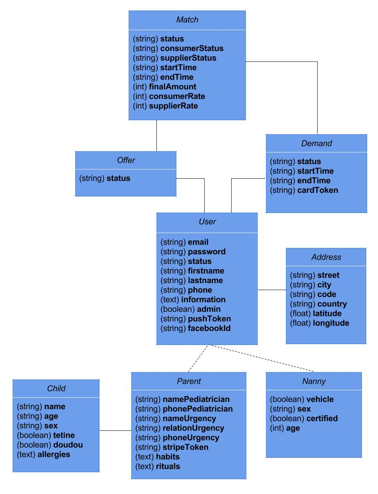
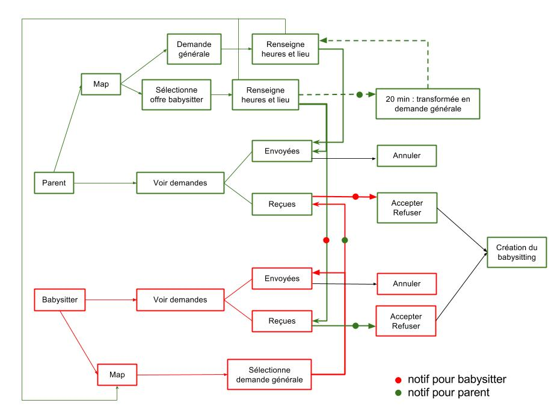
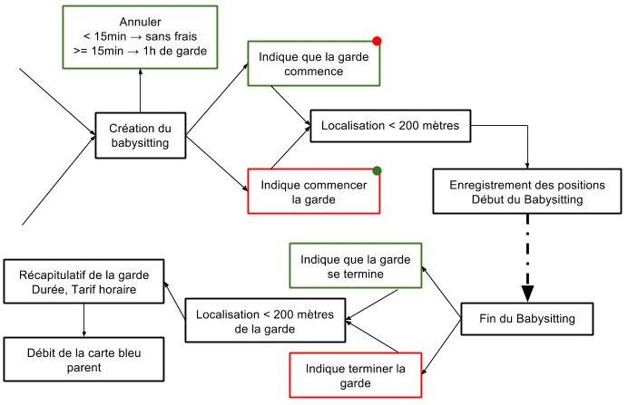

Soutenance de Stage A2
Nicolas de Chevigné
Développeur React Native & Node.js
Introduction
- NetDevices, expert dans le numérique depuis 2009
- Outils internes
Organisation de NetDevices
- Commerciaux
- Développeurs
- Web Designer
- Chef de Projets
- Communication
Web2Mobile
- Transformer l'apparence d'un site internet
- Créer une version mobile
- Agit comme une interface
- Référencement optimisé
Sharry
- Concept de l'économie collaborative
- Réutilisation du code d'une application
- Parki
Contexte du stage
- Mettre à jour Sharry
- Cas d'utilisation: Baby'lib
- Mise en contact de parents et de babysitter
- Terminer Parki
- ...
Paramédic
- Ambulances "uberisées"
- Découverte des outils chez NetDevices
- Git & GitLab
- Trello, JIRA
- Bamboo
- Découverte de React Native
- ES2015 & 2016
- Structure d'une application
- Composants, design, navigation...
Société Générale
- Présentation de données
- Découverte avancée de React Native
- Redux
- Connexion à une API
- Gestion des langues
Cahier des charges: Baby'lib
- Landing Page
- Application Android et iOS
- Inscription & Connexion, Profil
- Carte pour situer les babysitters/parents
- Créer la rencontre parent - babysitter
- Interagire avec des demandes/propositions
- Paiement
- Plusieurs types de babysitter: agréé ou non
- Historique, Tarifs, Contact
- Administration
- Aperçu et gestion des utilisateurs et babysittings
Cahier des charges: Sharry
- Baby'lib façon Sharry
- Repérer ce qui peut être générique
- Rendre tout ce qui n'est pas générique modifiable facilement
Analyse
- Parki
- Comprendre le fonctionnement de l'application
- Lire le code de l'application et de l'API
- Repérer tout ce qui peut être réutilisable
- 10% de l'application React Native
- 70% de l'API
Conception
Modèle de données de Baby'lib

Conception
Schéma fonctionnel


Programmation
- 80% du stage
- ECMAScript, HTML, CSS
- API
- Landing Page
- Application mobile
- Administration
Programmation
API
- Découverte de Node.js avec Parki
- Réécriture des modèles de données
- Modification des méthodes
Programmation
Landing Page
- Design HTML & CSS
- JavaScript
- Appels AJAX pour stocker les données
- Autocomplétion de l'adresse
Programmation
Application Android et iOS
- npm
- Composants JSX
- Android Studio & Xcode
- Les certificats
- Les permissions
Tests & Déploiements
- Objectifs quotidiens & hebdomadaires
- Déploiements intermédiaires
- Tests
- Intégration continue
Difficultés rencontrés
- Programmation
- Estimations
- Horaires flexibles
Conclusion
- Environnement professionnel
- Baby'lib, une application au grand public
- Sharry, un outil prometteur
- Opportunités de stage et de carrière